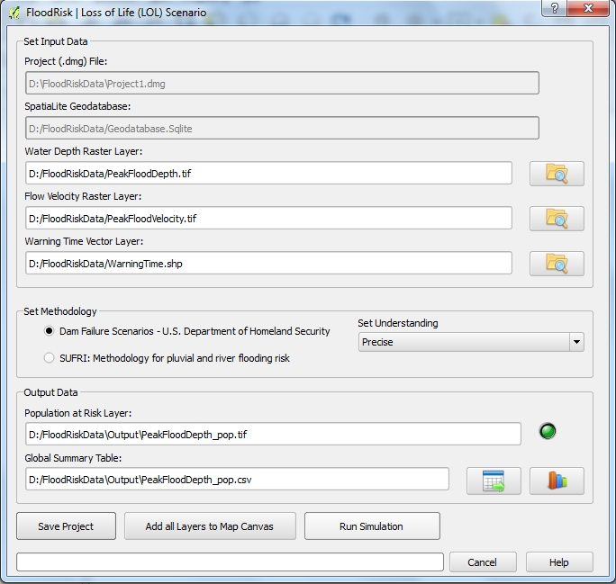

Loss of Life Assessment¶
The Loss of Life Assessment window allows you to asses the map of the population at risk and the number of potential fatalities. The map of the population at risk is obtained by superimposing the inundation map and the population density map. Once calculated the map of the population at risk, the number of potential fatalities is obtained by multiplying population at risk time the fatality rate.

- Data concern population and their vulnerability are stored in the geodatabase.
- Data concern the hazard are a map of maximum depth and maximum velocity values due to flooding. These data are the output from a 2D hydraulic model and are loaded into the system from any file type GDAL Raster Formats
- Further data necessary to assess the vulnerability of the population is the map of the warning time. The warning time indicates the amount of time between the reception of a warning and the instant in which the population of each structure could be affected by the flood event. These data should be a polygons shapefile having a field called “TimeHours” containing the value of the warning time in hours.
- Results are maps of population at risk and number of potential fatalities and a global summary table of the results which are also displayed in graphical form (histogram).
The files of results are:
Population at Risk Layer (*_pop.tif): a GeoTIFF File Format having two output bands:
band1: population density at risk (people per sq. km of land area) band2: loss of life density (people per sq. km of land area) Global summary table (*_pop.csv): a csv File Format containing the table of results grouped by Range of Wather Depth